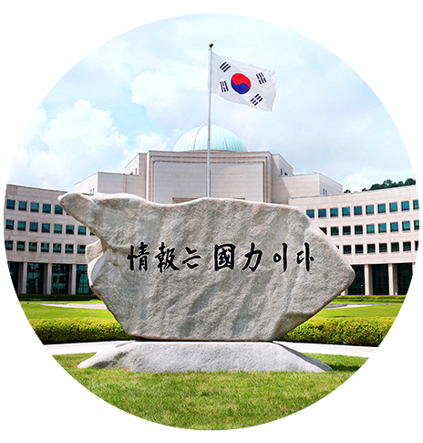

🚨국정원 휴민트 사건 요약
1. 대기업 반도체, 이온주입 기술자 A씨가 중국 창신메모리(CXMT)로 이직
2. 중국 창신메모리(CXMT)에서 근무 중이던 A씨가 한국의 반도체 기술이 다양한 경로로 중국에 유출되고 있음을 파악함
3. 증거를 최대한 모은 A씨는 국정원에게 전달,이후에도 쭉 전달함
4. A씨가 국정원과 컨택하고 있는것을 중국 공안측이 파악함.
5. 2023년 12월, 중국 허페이 시, A씨는 본인의 집에서 자고 있었는데 갑자기 공안이 문따고 들어와서 A씨를 끌고감. A씨를 취조하고 유치장에 넣음
6. 2024년 5월, 중국 공안은 A씨를 반간첩혐의로 구속함
7. 2025년 1월 첫 재판이 열렸으나, 선고가 안나옴.
(가족 피셜, 중국 검찰이 11-12년형이라 말해줬다함)
8. 국정원은 A씨를 구출하려고 제3국(대만) 블랙요원 정보를 중국에 넘기는 조건으로 A씨와 트레이드하려 했으나 중국이 거절함
9. 이 협상과정을 미국 정보부가 알게되어 미국이 유감표명함
중국 미국 정보력이 대단하긴하다
다 알아채냐 씹